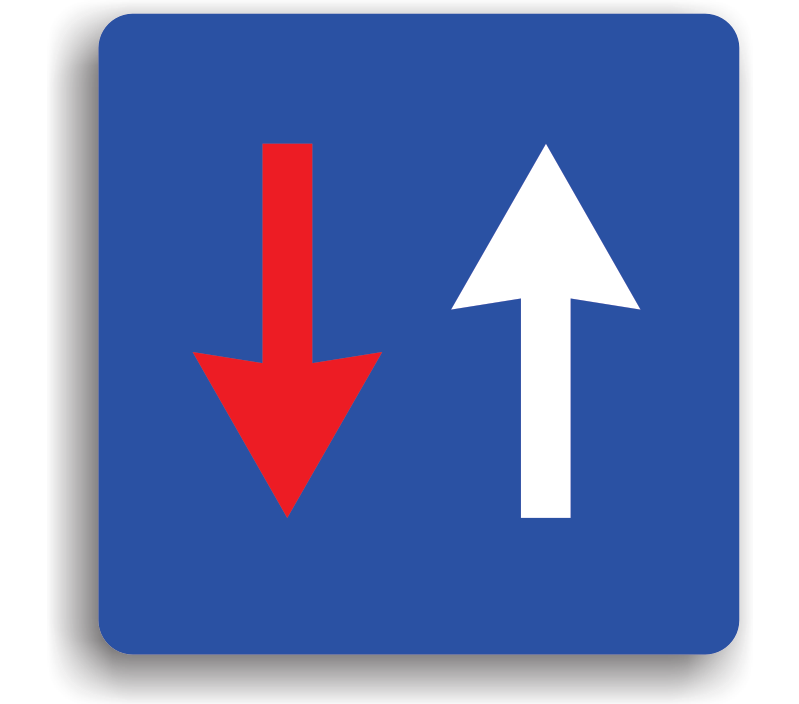
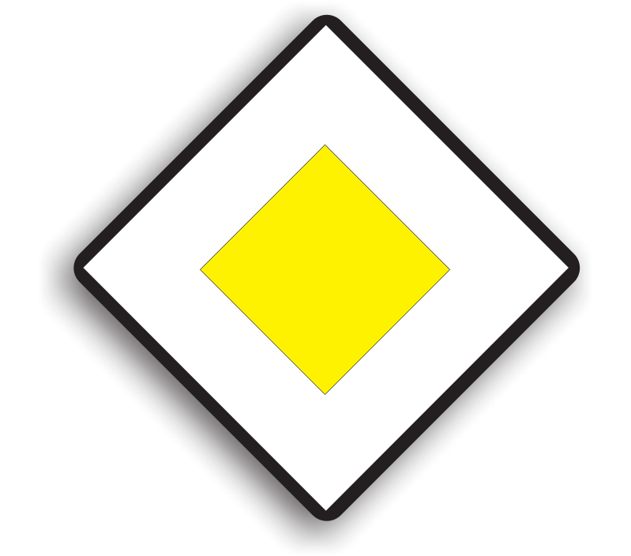
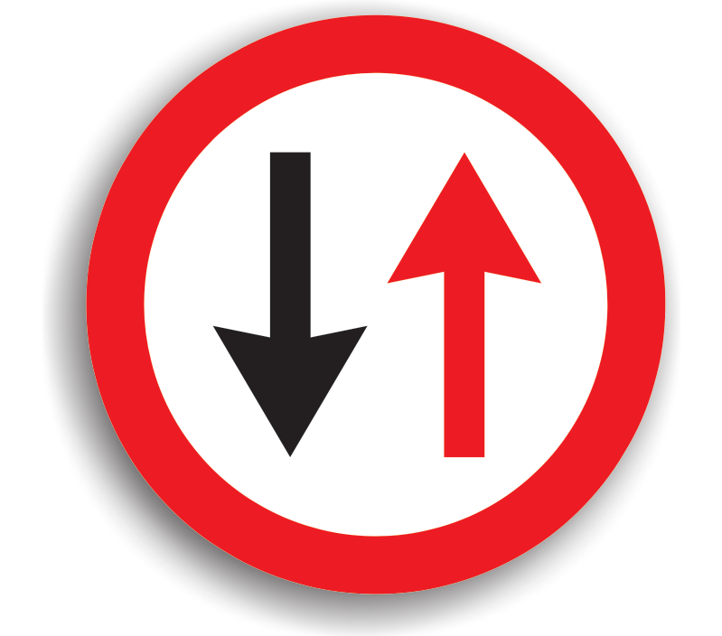
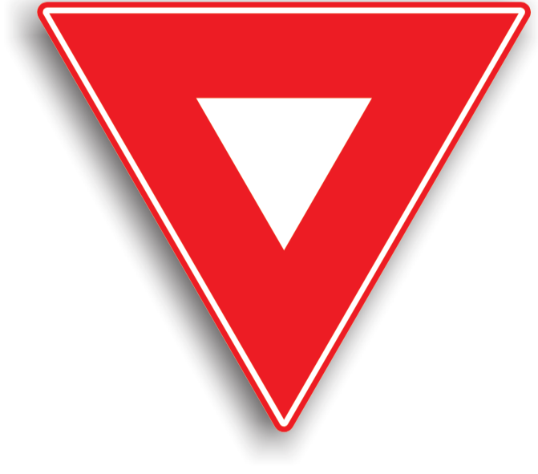
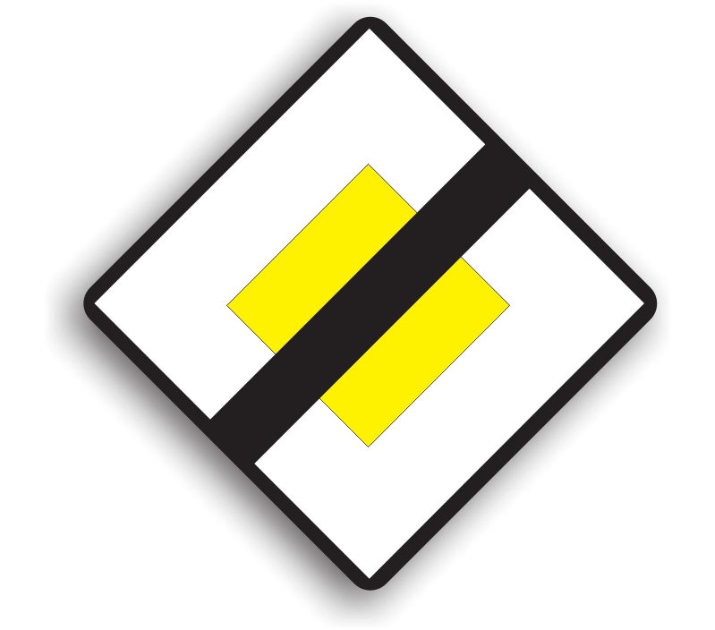

Raspunsuri corecte:
0
Timp:
0
/20
Ce trebuie sa faca conducatorul auto la intalnirea acestui indicator?

Sa acorde prioritate vehiculelor care circula din sens opus
>
Sa circule in continuare, deoarece are prioritate fata de vehiculele din sens opus
Sa evite depasirea, deoarece este interzisa
Ce semnifica urmatorul indicator?

Drum cu prioritate
Sfarsitul drumului cu prioritate.
Cedeaza trecerea
Unde trebuie sa opreasca conducatorul auto la intalnirea acestui indicator?
In locul cu vizibilitate maxima, fara a depasi coltul intersectiei
Nu este obligat sa opreasca, ci trebuie doar sa acorde prioritate celorlalti participanti la trafic
In mijlocul intersectiei in care este instalat, pentru a avea vizibilitate
Care manevra este permisa la intalnirea urmatorului indicator?

Mersul inapoi
Intoarcerea
Depasirea
Alege varianta corecta referitoare la acest indicator:

La intalnirea acestuia, conducatorul auto trebuie sa circule cu o viteza de cel mult 30km/h
La intalnirea acestuia, conducatorul auto trebuie sa reduca viteza si sa acorde prioritate vehiculelor care circula pe drumul prioritar.
La intalnirea acestuia, conducatorul auto trebuie sa opreasca in locul cu vizibilitate maxima si sa acorde prioritate.
Acest indicator informeaza conducatorul auto cu privire la faptul ca in urmatoarea intersectie in care va patrunde:

Va trebui sa acorde prioritate tuturor vehiculelor
Drumul pe care circula este un drum cu prioritate
Toate drumurile vor fi din aceeasi categorie
La acest quiz ai obtinut:
0
puncte
Apasa aici pentru a merge la lista cu quiz-uri